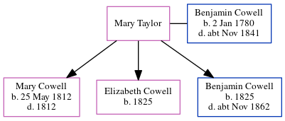

Mary Ann Cowell 1812 - 1812
[ Home ] | [ Calendar ] | [ Surnames Index ] | [ Errors ] | [ Family History ]The eldest of 3 children of Benjamin Cowell and Mary Taylor, Mary Cowell, the first cousin four-times-removed on the mother's side of Nigel Horne, was born in St Lawrence, Thanet, Kent, England on 25 May 18121,2 and baptised there on 21 Jun 1812.
She died in 1812 and was buried in St Lawrence on 10 Jul 18123.
Parents
- Benjamin was born on 2 Jan 1780
Citations
- Kent, Canterbury Archdeaconry baptisms 1538-1912 - Findmypast
- Kent, Canterbury Archdeaconry burials 1538-1988 - Findmypast
- Kent, Canterbury Archdeaconry burials 1538-1988 - Findmypast
Media
Kent, Canterbury Archdeaconry burials 1538-1988 - GBPRS/CANT/D/95273259
Kent, Canterbury Archdeaconry baptisms 1538-1912 - GBPRS/CANT/B/96398437
Family Tree
Map
Generated by ged2site. Last updated on Jul 3, 2024
Known Issues
Death date (1812) has no citations
Date of death is known, but not place